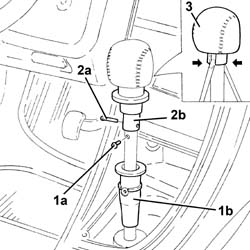

2135A16 automatic transmission lever handle - r r
- Path
- Procedures > 21 GEARBOX > 2135 AUTOMATIC TRANSMISSION EXTERNAL CONTROLS > 2135A automatic transmission manual controls > 2135A16 automatic transmission lever handle - r r
- Kind
- repair procedure (removal / refitting; the operation number is the code)
- Applies to
- engines: 2.5 V6; all production periods
- Interactive page
- https://sloeber94.github.io/elrnDB-a156/en/#/3238005
Applies to: engines: 2.5 V6; all production periods; only with equipment: Automatic transmission
 Removing
Removing
 Refitting
RefittingRemove the automatic transmission lever boot.
1. Undo the bolt (1a) fixing the gear lever lower dust cover (1b).
2. Remove the pin (2a) fixing the gear lever upper dust cover (2b).
3. Press the springs and remove the automatic transmission lever grip.

Applies to: engines: 2.5 V6; all production periods; only with equipment: Automatic transmission
Refitting
RemovingPlace the automatic transmission lever grip back in its housing.
Place the gear lever upper dust cover back in its housing and fix it using the pin.
Place the gear lever lower dust cover back in its housing and fix it using the bolt.